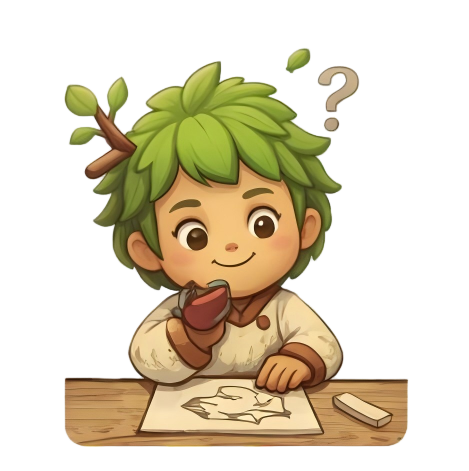
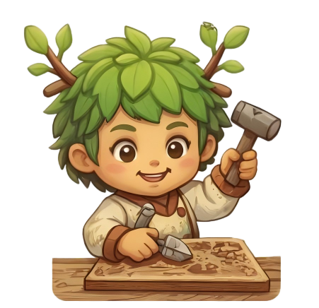
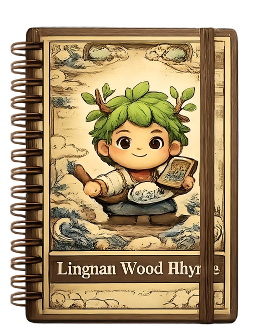
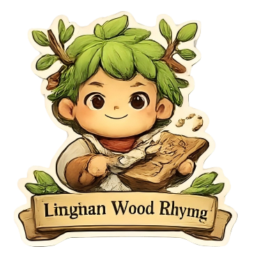
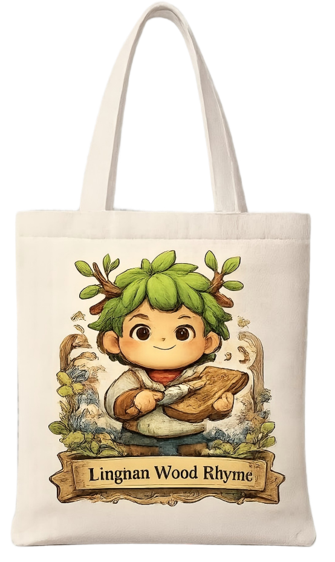

岭南木韵，
刻绘非遗时光
以木为纸，以刀为笔。让指尖流转的传统木版画技艺，在当代审美中重获新生。
壹.
木韵工坊


基于岭南传统木版画工艺流程，从绘稿落墨到操刀刻板。每一道工序皆是匠心对艺术灵魂的深度唤醒。
贰.
热门文创



我们将木版画艺术转化为现代日常。无论是精巧的画框，还是承载情怀的帆布袋，让艺术触手可及。
叁.
品牌故事
“岭南木韵”旨在通过现代设计语境，重新赋能传统木版画。让非遗不仅活在博物馆，更真正走进生活。